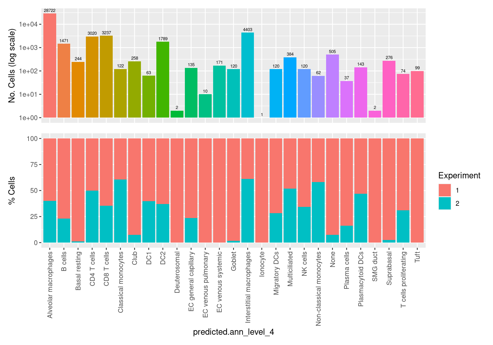

Analysis of CF_BAL_Pilot & C133_Neeland Data Combined
Compare HCLA v1.0 versus HCLA v2.0 Annotation
Jovana Maksimovic
March 30, 2022
Last updated: 2022-03-30
Checks: 7 0
Knit directory: paed-cf-cite-seq/
This reproducible R Markdown analysis was created with workflowr (version 1.7.0). The Checks tab describes the reproducibility checks that were applied when the results were created. The Past versions tab lists the development history.
Great! Since the R Markdown file has been committed to the Git repository, you know the exact version of the code that produced these results.
Great job! The global environment was empty. Objects defined in the global environment can affect the analysis in your R Markdown file in unknown ways. For reproduciblity it’s best to always run the code in an empty environment.
The command set.seed(20210524) was run prior to running the code in the R Markdown file. Setting a seed ensures that any results that rely on randomness, e.g. subsampling or permutations, are reproducible.
Great job! Recording the operating system, R version, and package versions is critical for reproducibility.
Nice! There were no cached chunks for this analysis, so you can be confident that you successfully produced the results during this run.
Great job! Using relative paths to the files within your workflowr project makes it easier to run your code on other machines.
Great! You are using Git for version control. Tracking code development and connecting the code version to the results is critical for reproducibility.
The results in this page were generated with repository version f45417b. See the Past versions tab to see a history of the changes made to the R Markdown and HTML files.
Note that you need to be careful to ensure that all relevant files for the analysis have been committed to Git prior to generating the results (you can use wflow_publish or wflow_git_commit). workflowr only checks the R Markdown file, but you know if there are other scripts or data files that it depends on. Below is the status of the Git repository when the results were generated:
Ignored files:
Ignored: .Rhistory
Ignored: .Rproj.user/
Ignored: data/CellRanger/
Ignored: data/emptyDrops/bin/
Ignored: renv/library/
Ignored: renv/staging/
Untracked files:
Untracked: Rplots.pdf
Untracked: analysis/03_COMBO.annotation_markers.Rmd
Untracked: analysis/03_COMBO.protein_analysis.Rmd
Untracked: analysis/scGateDB/
Untracked: code/03_C133_Neeland-dropletutils.R
Untracked: code/03_COMBO.proteins_geneBasis.R
Untracked: data/190930_A00152_0150_BHTYCMDSXX/
Untracked: data/Flow_data_CITEseq_2-8.csv
Untracked: data/GSE127465_RAW/
Untracked: data/GSE130148_barcodes_cell_types.txt
Untracked: data/GSE130148_raw_counts.RData
Untracked: data/Macrophage_subcluster_annotation_110322.csv
Untracked: data/Other_subcluster_annotation_110322.csv
Untracked: data/T-NK_subcluster_annotation_110322.csv
Untracked: data/T-NK_subcluster_proteins.csv
Untracked: data/T-NK_subcluster_proteins_110322.csv
Untracked: data/T-NK_subclusters_cytokines.csv
Untracked: data/T-NK_subclusters_markergenes_110322.csv
Untracked: data/all_azimuth_cluster_cytokines.csv
Untracked: data/all_azimuth_clusters_proteins.csv
Untracked: data/cell_type_category_rna_Granulocytes_Cell.tsv
Untracked: data/consolidated_markers.rds
Untracked: data/gb-genes-50.rds
Untracked: data/genome1K.phase3.SNP_AF5e4.chr1toX.hg38.vcf.gz
Untracked: data/macrophage_subcluster_cytokines.csv
Untracked: data/macrophage_subcluster_markergenes_110322.csv
Untracked: data/macrophage_subcluster_markergenes_160322.csv
Untracked: data/macrophage_subcluster_proteins.csv
Untracked: data/macrophage_subcluster_proteins_110322.csv
Untracked: data/neutrophil.tsv
Untracked: data/other_subcluster_proteins.csv
Untracked: data/other_subcluster_proteins_110322.csv
Untracked: data/other_subclusters_cytokines.csv
Untracked: data/other_subclusters_markergenes_110322.csv
Untracked: data/proteins_ranked.rds
Untracked: data/sample_sheets/Hashtag_Feature_Ref_With_Clin.csv
Untracked: data/sample_sheets/TotalSeq_A_Human_Universal_Cocktail_Proteins of interest_29.09.21.csv
Untracked: data/sample_sheets/TotalSeq_A_Human_Universal_Cocktail_Proteins_of_interest_28.06.21.csv
Untracked: output/ADT-counts.csv
Untracked: output/C133_Neeland.azimuth.individual_cell_type_proportions.csv
Untracked: output/C133_Neeland.azimuth.phenotype_information.csv
Untracked: output/C133_Neeland.individual_cell_type_proportions.csv
Untracked: output/C133_Neeland.phenotype_information.csv
Untracked: output/DEGs/
Untracked: output/glimma-plots/js/labelled-singlets-md-plot.js
Untracked: output/glimma-plots/js/qc-md-plot_03_C133_Neeland.js
Untracked: output/glimma-plots/js/qc-md-plot_C133_Neeland.js
Untracked: output/glimma-plots/js/qc-md-plot_CF-BAL-Pilot.js
Untracked: output/glimma-plots/labelled-singlets-md-plot.html
Untracked: output/glimma-plots/qc-md-plot_03_C133_Neeland.html
Untracked: output/glimma-plots/qc-md-plot_C133_Neeland.html
Untracked: output/glimma-plots/qc-md-plot_CF-BAL-Pilot.html
Untracked: output/marker-analysis-mod/
Untracked: output/marker-analysis/
Untracked: output/metadata.csv
Untracked: output/protein_labels.pdf
Untracked: scGateDB/
Untracked: wflow_background.R
Unstaged changes:
Modified: analysis/03_COMBO.proportion_analysis.Rmd
Modified: data/SCEs/C133_Neeland.CellRanger.SCE.rds
Modified: data/SCEs/C133_Neeland.demultiplexed.SCE.rds
Deleted: data/SCEs/C133_Neeland.preprocessed.SCE.hto.rds
Deleted: data/SCEs/C133_Neeland.preprocessed.SCE_hto.rds
Deleted: data/SCEs/C133_Neeland.preprocessed.SCE_snp.rds
Modified: data/sample_sheets/TotalSeq-A_Universal_Cocktail_v1.0.csv
Modified: data/vireo/C133_1/GT_donors.vireo.vcf.gz
Modified: data/vireo/C133_1/_log.txt
Modified: data/vireo/C133_1/donor_ids.tsv
Modified: data/vireo/C133_1/fig_GT_distance_estimated.pdf
Modified: data/vireo/C133_1/prob_doublet.tsv.gz
Modified: data/vireo/C133_1/prob_singlet.tsv.gz
Modified: data/vireo/C133_1/summary.tsv
Modified: data/vireo/C133_2/GT_donors.vireo.vcf.gz
Modified: data/vireo/C133_2/_log.txt
Modified: data/vireo/C133_2/donor_ids.tsv
Modified: data/vireo/C133_2/fig_GT_distance_estimated.pdf
Modified: data/vireo/C133_2/prob_doublet.tsv.gz
Modified: data/vireo/C133_2/prob_singlet.tsv.gz
Modified: data/vireo/C133_2/summary.tsv
Modified: output/glimma-plots/js/qc-md-plot.js
Modified: output/glimma-plots/js/stripped-nuclei-md-plot.js
Modified: renv/.gitignore
Modified: renv/activate.R
Modified: renv/settings.dcf
Note that any generated files, e.g. HTML, png, CSS, etc., are not included in this status report because it is ok for generated content to have uncommitted changes.
These are the previous versions of the repository in which changes were made to the R Markdown (analysis/03_COMBO.compare_annotations.Rmd) and HTML (docs/03_COMBO.compare_annotations.html) files. If you’ve configured a remote Git repository (see ?wflow_git_remote), click on the hyperlinks in the table below to view the files as they were in that past version.
| File | Version | Author | Date | Message |
|---|---|---|---|---|
| Rmd | f45417b | Jovana Maksimovic | 2022-03-30 | wflow_publish("analysis/03_COMBO.compare_annotations.Rmd") |
Load libraries
Load Data
Load integrated, clustered data that has been mapped to Zilionis reference.
out <- here("data/SCEs/03_COMBO.zilionis_mapped.SEU.rds")
seuInt <- readRDS(out)
table(seuInt$predicted.celltype)
bB cells bMonocytes bMyeloid precursor-like
989 596 32
bNeutrophils bNK cells bpDC
12 590 28
bT cells Ciliated cells Club cells
3867 314 84
Endothelial cells Fibroblasts ND
255 1 937
Smooth muscle cells tB cells tMast cells
34 442 49
tMoMacDC tNeutrophils tNK cells
35172 114 612
tpDC tPlasma cells tT cells
111 44 1307 Annotate data using Azimuth & Human Lung Cell Reference
Add Azimuth HCLA v1.0 labels
Add Azimuth labels to data.
seuInt <- AddAzimuthResults(seuInt,
filename = here("data/SCEs/03_COMBO.clustered_azimuth.SEU.rds"))
seuInt$predicted.annotation.l1 <- fct_drop(seuInt$predicted.annotation.l1)
table(seuInt$predicted.annotation.l1)
Basophil/Mast Ciliated
48 384
Alveolar Epithelial Type 2 Bronchial Vessel
19 87
Capillary Intermediate Basal
134 363
Dendritic CD16+ Monocyte
2494 24
CD14+ Monocyte Smooth Muscle
620 1
CD8 T CD4 T
2416 3578
Plasmacytoid Dendritic B
141 1403
Macrophage Vein
32039 37
Artery Mucous
12 10
Lymphatic Proliferating Macrophage
28 758
Proliferating NK/T Natural Killer T
102 257
Natural Killer Plasma
121 33
Neuroendocrine Ionocyte
4 412
Goblet
65 Add Azimuth HCLA v2.0 labels
Add Azimuth labels to data.
seuInt <- AddAzimuthResults(seuInt,
filename = here("data/SCEs/03_COMBO.clustered_azimuth_v2.SEU.Rds"))
seuInt$predicted.ann_level_1 <- fct_drop(seuInt$predicted.ann_level_1)
seuInt$predicted.ann_level_2 <- fct_drop(seuInt$predicted.ann_level_2)
seuInt$predicted.ann_level_3 <- fct_drop(seuInt$predicted.ann_level_3)
seuInt$predicted.ann_level_4 <- fct_drop(seuInt$predicted.ann_level_4)
seuInt$predicted.ann_finest_level <- fct_drop(seuInt$predicted.ann_finest_level)
table(seuInt$predicted.ann_level_1) %>% knitr::kable()| Var1 | Freq |
|---|---|
| Endothelial | 322 |
| Epithelial | 1800 |
| Immune | 43468 |
table(seuInt$predicted.ann_level_2) %>% knitr::kable()| Var1 | Freq |
|---|---|
| Airway epithelium | 1488 |
| Alveolar epithelium | 299 |
| Blood vessels | 325 |
| Lymphatic EC | 2 |
| Lymphoid | 7955 |
| Myeloid | 35521 |
table(seuInt$predicted.ann_level_3) %>% knitr::kable()| Var1 | Freq |
|---|---|
| AT1 | 369 |
| AT2 | 1 |
| B cell lineage | 1492 |
| Basal | 541 |
| Dendritic cells | 2081 |
| EC arterial | 27 |
| EC capillary | 121 |
| EC venous | 187 |
| Innate lymphoid cell NK | 120 |
| Lymphatic EC mature | 11 |
| Macrophages | 33161 |
| Mast cells | 51 |
| Monocytes | 204 |
| Multiciliated lineage | 386 |
| Rare | 99 |
| Secretory | 397 |
| T cell lineage | 6342 |
table(seuInt$predicted.ann_level_4) %>% knitr::kable()| Var1 | Freq |
|---|---|
| Alveolar macrophages | 28722 |
| B cells | 1471 |
| Basal resting | 244 |
| CD4 T cells | 3020 |
| CD8 T cells | 3237 |
| Classical monocytes | 122 |
| Club | 258 |
| DC1 | 63 |
| DC2 | 1789 |
| Deuterosomal | 2 |
| EC general capillary | 135 |
| EC venous pulmonary | 10 |
| EC venous systemic | 171 |
| Goblet | 120 |
| Interstitial macrophages | 4403 |
| Ionocyte | 1 |
| Migratory DCs | 120 |
| Multiciliated | 384 |
| NK cells | 120 |
| Non-classical monocytes | 62 |
| None | 505 |
| Plasma cells | 37 |
| Plasmacytoid DCs | 143 |
| SMG duct | 2 |
| Suprabasal | 276 |
| T cells proliferating | 74 |
| Tuft | 99 |
table(seuInt$predicted.ann_finest_level) %>% knitr::kable()| Var1 | Freq |
|---|---|
| Alveolar macrophages | 27390 |
| Alveolar Mφ CCL3+ | 573 |
| Alveolar Mφ proliferating | 686 |
| AT1 | 400 |
| AT2 | 1 |
| B cells | 1471 |
| Basal resting | 245 |
| CD4 T cells | 3020 |
| CD8 T cells | 3237 |
| Classical monocytes | 133 |
| Club (nasal) | 230 |
| Club (non-nasal) | 32 |
| DC1 | 63 |
| DC2 | 1909 |
| Deuterosomal | 2 |
| EC arterial | 27 |
| EC general capillary | 145 |
| EC venous pulmonary | 10 |
| EC venous systemic | 171 |
| Goblet (bronchial) | 1 |
| Goblet (nasal) | 116 |
| Interstitial Mφ perivascular | 267 |
| Ionocyte | 2 |
| Lymphatic EC mature | 12 |
| Mast cells | 51 |
| Migratory DCs | 120 |
| Monocyte-derived Mφ | 4054 |
| Multiciliated (nasal) | 1 |
| Multiciliated (non-nasal) | 383 |
| NK cells | 120 |
| Non-classical monocytes | 86 |
| Plasma cells | 37 |
| Plasmacytoid DCs | 143 |
| SMG duct | 2 |
| Suprabasal | 276 |
| T cells proliferating | 74 |
| Tuft | 100 |
Visualise reference mapping
azimuth_results <- readRDS(here("data/SCEs/03_COMBO.clustered_azimuth.SEU.rds"))
seuInt[["umap.proj.v1"]] <- azimuth_results$umap
DimPlot(seuInt, reduction = 'umap.proj.v1',
label = TRUE, repel = TRUE, label.size = 2.5,
group.by = "predicted.annotation.l1") + NoLegend()DimPlot(seuInt, reduction = 'umap.proj',
label = TRUE, repel = TRUE, label.size = 2.5,
group.by = "predicted.ann_level_1") + NoLegend()DimPlot(seuInt, reduction = 'umap.proj',
label = TRUE, repel = TRUE, label.size = 2.5,
group.by = "predicted.ann_level_2") + NoLegend()DimPlot(seuInt, reduction = 'umap.proj',
label = TRUE, repel = TRUE, label.size = 2.5,
group.by = "predicted.ann_level_3") + NoLegend()DimPlot(seuInt, reduction = 'umap.proj',
label = TRUE, repel = TRUE, label.size = 2.5,
group.by = "predicted.ann_level_4") + NoLegend()DimPlot(seuInt, reduction = 'umap.proj',
label = TRUE, repel = TRUE, label.size = 2.5,
group.by = "predicted.ann_finest_level") + NoLegend()labels <- colnames(seuInt@meta.data)[grepl("(?!.*score$)predicted.ann",
colnames(seuInt@meta.data),
perl = TRUE)]
p <- vector("list",length(labels))
for(label in labels){
seuInt@meta.data %>%
ggplot(aes(x = !!sym(label), fill = !!sym(label))) +
geom_bar() +
geom_text(aes(label = ..count..), stat = "count",
vjust = -0.5, colour = "black", size = 2) +
scale_y_log10() +
theme(axis.text.x = element_blank(),
axis.title.x = element_blank(),
axis.ticks.x = element_blank()) +
NoLegend() +
labs(y = "No. Cells (log scale)") -> p1
seuInt@meta.data %>%
dplyr::select(!!sym(label), experiment) %>%
group_by(!!sym(label), experiment) %>%
summarise(num = n()) %>%
mutate(prop = num / sum(num)) %>%
ggplot(aes(x = !!sym(label), y = prop * 100,
fill = experiment)) +
geom_bar(stat = "identity") +
theme(axis.text.x = element_text(angle = 90,
vjust = 0.5,
hjust = 1)) +
labs(y = "% Cells", fill = "Experiment") -> p2
p1 / p2 -> p[[label]]
}
p[[1]]
NULL
[[2]]
NULL
[[3]]
NULL
[[4]]
NULL
[[5]]
NULL
[[6]]
NULL
[[7]]
NULL
$predicted.annotation.l1
$predicted.ann_level_1
$predicted.ann_level_2
$predicted.ann_level_3
$predicted.ann_level_4
$predicted.ann_level_5
$predicted.ann_finest_levelcheck <- levels(seuInt$predicted.annotation.l1)
p <- vector("list", length(check))
for(i in 1:length(p)){
seuInt@meta.data %>%
dplyr::filter(predicted.annotation.l1 == check[i]) %>%
ggplot(aes(x = predicted.ann_level_3.score,
colour = predicted.ann_level_3)) +
geom_density() +
ggtitle(paste0("Cluster ", check[i])) +
theme(legend.key.size = unit(4, "pt")) -> p1
seuInt@meta.data %>%
dplyr::filter(predicted.annotation.l1 == check[i]) %>%
ggplot(aes(x = predicted.ann_level_3,
fill = predicted.ann_level_3)) +
geom_bar() +
geom_text(aes(label = ..count..), stat = "count",
vjust = -0.5, colour = "black", size = 2) +
theme(axis.text.x = element_text(angle = 90, vjust = 0.5, hjust = 1)) +
NoLegend() -> p2
seuInt@meta.data %>%
dplyr::filter(predicted.annotation.l1 == check[i]) %>%
ggplot(aes(x = predicted.ann_finest_level.score,
colour = predicted.ann_finest_level)) +
geom_density() +
ggtitle(paste0("Cluster ", check[i])) +
theme(legend.key.size = unit(4, "pt")) -> p3
seuInt@meta.data %>%
dplyr::filter(predicted.annotation.l1 == check[i]) %>%
ggplot(aes(x = predicted.ann_finest_level,
fill = predicted.ann_finest_level)) +
geom_bar() +
geom_text(aes(label = ..count..), stat = "count",
vjust = -0.5, colour = "black", size = 2) +
theme(axis.text.x = element_text(angle = 90, vjust = 0.5, hjust = 1)) +
NoLegend() -> p4
seuInt@meta.data %>%
dplyr::filter(predicted.annotation.l1 == check[i]) %>%
ggplot(aes(x = predicted.ann_level_4.score,
colour = predicted.ann_level_4)) +
geom_density() +
ggtitle(paste0("Cluster ", check[i])) +
theme(legend.key.size = unit(4, "pt")) -> p5
seuInt@meta.data %>%
dplyr::filter(predicted.annotation.l1 == check[i]) %>%
ggplot(aes(x = predicted.ann_level_4,
fill = predicted.ann_level_4)) +
geom_bar() +
geom_text(aes(label = ..count..), stat = "count",
vjust = -0.5, colour = "black", size = 2) +
theme(axis.text.x = element_text(angle = 90, vjust = 0.5, hjust = 1)) +
NoLegend() -> p6
((p1 | p2) / (p5 | p6) / (p3 | p4)) +
plot_annotation(title = check[i]) &
theme(text = element_text(size = 8)) -> p[[i]]
}
p[[1]]
[[2]]
[[3]]
[[4]]
[[5]]
[[6]]
[[7]]
[[8]]
[[9]]
[[10]]
[[11]]
[[12]]
[[13]]
[[14]]
[[15]]
[[16]]
[[17]]
[[18]]
[[19]]
[[20]]
[[21]]
[[22]]
[[23]]
[[24]]
[[25]]
[[26]]
[[27]]Session info
sessioninfo::session_info()─ Session info ───────────────────────────────────────────────────────────────
setting value
version R version 4.1.0 (2021-05-18)
os CentOS Linux 7 (Core)
system x86_64, linux-gnu
ui X11
language (EN)
collate en_AU.UTF-8
ctype en_AU.UTF-8
tz Australia/Melbourne
date 2022-03-30
pandoc 2.14.0.3 @ /usr/lib/rstudio-server/bin/pandoc/ (via rmarkdown)
─ Packages ───────────────────────────────────────────────────────────────────
! package * version date (UTC) lib source
P abind 1.4-5 2016-07-21 [?] CRAN (R 4.1.0)
P AnnotationDbi * 1.56.2 2021-11-09 [?] Bioconductor
P AnnotationFilter * 1.18.0 2021-10-26 [?] Bioconductor
P AnnotationHub * 3.2.0 2021-10-26 [?] Bioconductor
P assertthat 0.2.1 2019-03-21 [?] CRAN (R 4.1.0)
P backports 1.4.1 2021-12-13 [?] CRAN (R 4.1.0)
P beachmat 2.10.0 2021-10-26 [?] Bioconductor
P beeswarm 0.4.0 2021-06-01 [?] CRAN (R 4.1.0)
P Biobase * 2.54.0 2021-10-26 [?] Bioconductor
P BiocFileCache * 2.2.0 2021-10-26 [?] Bioconductor
P BiocGenerics * 0.40.0 2021-10-26 [?] Bioconductor
P BiocIO 1.4.0 2021-10-26 [?] Bioconductor
P BiocManager 1.30.16 2021-06-15 [?] CRAN (R 4.1.0)
P BiocNeighbors 1.12.0 2021-10-26 [?] Bioconductor
P BiocParallel * 1.28.3 2021-12-09 [?] Bioconductor
P BiocSingular 1.10.0 2021-10-26 [?] Bioconductor
P BiocVersion 3.14.0 2021-05-19 [?] Bioconductor
P biomaRt 2.50.1 2021-11-21 [?] Bioconductor
P Biostrings 2.62.0 2021-10-26 [?] Bioconductor
P bit 4.0.4 2020-08-04 [?] CRAN (R 4.1.0)
P bit64 4.0.5 2020-08-30 [?] CRAN (R 4.0.2)
P bitops 1.0-7 2021-04-24 [?] CRAN (R 4.0.2)
P blob 1.2.2 2021-07-23 [?] CRAN (R 4.1.0)
P bluster 1.4.0 2021-10-26 [?] Bioconductor
P broom 0.7.11 2022-01-03 [?] CRAN (R 4.1.0)
P bslib 0.3.1 2021-10-06 [?] CRAN (R 4.1.0)
P cachem 1.0.6 2021-08-19 [?] CRAN (R 4.1.0)
P callr 3.7.0 2021-04-20 [?] CRAN (R 4.1.0)
P cellranger 1.1.0 2016-07-27 [?] CRAN (R 4.1.0)
P cli 3.1.0 2021-10-27 [?] CRAN (R 4.1.0)
P cluster 2.1.2 2021-04-17 [?] CRAN (R 4.1.0)
P clustree * 0.4.4 2021-11-08 [?] CRAN (R 4.1.0)
P codetools 0.2-18 2020-11-04 [?] CRAN (R 4.1.0)
P colorspace 2.0-2 2021-06-24 [?] CRAN (R 4.0.2)
P cowplot 1.1.1 2020-12-30 [?] CRAN (R 4.0.2)
P crayon 1.4.2 2021-10-29 [?] CRAN (R 4.1.0)
P curl 4.3.2 2021-06-23 [?] CRAN (R 4.1.0)
P data.table * 1.14.2 2021-09-27 [?] CRAN (R 4.1.0)
P DBI 1.1.2 2021-12-20 [?] CRAN (R 4.1.0)
P dbplyr * 2.1.1 2021-04-06 [?] CRAN (R 4.1.0)
P DelayedArray 0.20.0 2021-10-26 [?] Bioconductor
P DelayedMatrixStats 1.16.0 2021-10-26 [?] Bioconductor
P deldir 1.0-6 2021-10-23 [?] CRAN (R 4.1.0)
P digest 0.6.29 2021-12-01 [?] CRAN (R 4.1.0)
P dplyr * 1.0.7 2021-06-18 [?] CRAN (R 4.1.0)
P dqrng 0.3.0 2021-05-01 [?] CRAN (R 4.1.0)
P DropletUtils * 1.14.1 2021-11-08 [?] Bioconductor
P edgeR * 3.36.0 2021-10-26 [?] Bioconductor
P ellipsis 0.3.2 2021-04-29 [?] CRAN (R 4.0.2)
P ensembldb * 2.18.2 2021-11-08 [?] Bioconductor
P evaluate 0.14 2019-05-28 [?] CRAN (R 4.0.2)
P fansi 1.0.0 2022-01-10 [?] CRAN (R 4.1.0)
P farver 2.1.0 2021-02-28 [?] CRAN (R 4.0.2)
P fastmap 1.1.0 2021-01-25 [?] CRAN (R 4.1.0)
P filelock 1.0.2 2018-10-05 [?] CRAN (R 4.1.0)
P fitdistrplus 1.1-6 2021-09-28 [?] CRAN (R 4.1.0)
P forcats * 0.5.1 2021-01-27 [?] CRAN (R 4.1.0)
P fs 1.5.2 2021-12-08 [?] CRAN (R 4.1.0)
P future 1.23.0 2021-10-31 [?] CRAN (R 4.1.0)
P future.apply 1.8.1 2021-08-10 [?] CRAN (R 4.1.0)
P generics 0.1.1 2021-10-25 [?] CRAN (R 4.1.0)
GenomeInfoDb * 1.30.1 2022-01-30 [1] Bioconductor
P GenomeInfoDbData 1.2.7 2021-12-21 [?] Bioconductor
P GenomicAlignments 1.30.0 2021-10-26 [?] Bioconductor
P GenomicFeatures * 1.46.3 2021-12-30 [?] Bioconductor
P GenomicRanges * 1.46.1 2021-11-18 [?] Bioconductor
P getPass 0.2-2 2017-07-21 [?] CRAN (R 4.0.2)
P ggalluvial * 0.12.3 2020-12-05 [?] CRAN (R 4.1.0)
P ggbeeswarm 0.6.0 2017-08-07 [?] CRAN (R 4.1.0)
P ggforce 0.3.3 2021-03-05 [?] CRAN (R 4.1.0)
P ggplot2 * 3.3.5 2021-06-25 [?] CRAN (R 4.0.2)
P ggraph * 2.0.5 2021-02-23 [?] CRAN (R 4.1.0)
P ggrepel 0.9.1 2021-01-15 [?] CRAN (R 4.1.0)
P ggridges * 0.5.3 2021-01-08 [?] CRAN (R 4.1.0)
P git2r 0.29.0 2021-11-22 [?] CRAN (R 4.1.0)
P glmGamPoi * 1.6.0 2021-10-26 [?] Bioconductor
P globals 0.14.0 2020-11-22 [?] CRAN (R 4.0.2)
P glue * 1.6.0 2021-12-17 [?] CRAN (R 4.1.0)
P goftest 1.2-3 2021-10-07 [?] CRAN (R 4.1.0)
P graphlayouts 0.8.0 2022-01-03 [?] CRAN (R 4.1.0)
P gridExtra 2.3 2017-09-09 [?] CRAN (R 4.1.0)
P gtable 0.3.0 2019-03-25 [?] CRAN (R 4.1.0)
P haven 2.4.3 2021-08-04 [?] CRAN (R 4.1.0)
P HDF5Array 1.22.1 2021-11-14 [?] Bioconductor
P here * 1.0.1 2020-12-13 [?] CRAN (R 4.0.2)
P highr 0.9 2021-04-16 [?] CRAN (R 4.1.0)
P hms 1.1.1 2021-09-26 [?] CRAN (R 4.1.0)
P htmltools 0.5.2 2021-08-25 [?] CRAN (R 4.1.0)
P htmlwidgets 1.5.4 2021-09-08 [?] CRAN (R 4.1.0)
P httpuv 1.6.5 2022-01-05 [?] CRAN (R 4.1.0)
P httr 1.4.2 2020-07-20 [?] CRAN (R 4.1.0)
P ica 1.0-2 2018-05-24 [?] CRAN (R 4.1.0)
P igraph 1.2.11 2022-01-04 [?] CRAN (R 4.1.0)
P interactiveDisplayBase 1.32.0 2021-10-26 [?] Bioconductor
P IRanges * 2.28.0 2021-10-26 [?] Bioconductor
P irlba 2.3.5 2021-12-06 [?] CRAN (R 4.1.0)
P janitor * 2.1.0 2021-01-05 [?] CRAN (R 4.0.2)
P jquerylib 0.1.4 2021-04-26 [?] CRAN (R 4.1.0)
P jsonlite 1.7.2 2020-12-09 [?] CRAN (R 4.0.2)
P KEGGREST 1.34.0 2021-10-26 [?] Bioconductor
P KernSmooth 2.23-20 2021-05-03 [?] CRAN (R 4.1.0)
P knitr 1.37 2021-12-16 [?] CRAN (R 4.1.0)
P labeling 0.4.2 2020-10-20 [?] CRAN (R 4.0.2)
P later 1.3.0 2021-08-18 [?] CRAN (R 4.1.0)
P lattice 0.20-45 2021-09-22 [?] CRAN (R 4.1.0)
P lazyeval 0.2.2 2019-03-15 [?] CRAN (R 4.1.0)
P leiden 0.3.9 2021-07-27 [?] CRAN (R 4.1.0)
P lifecycle 1.0.1 2021-09-24 [?] CRAN (R 4.1.0)
P limma * 3.50.0 2021-10-26 [?] Bioconductor
P listenv 0.8.0 2019-12-05 [?] CRAN (R 4.1.0)
P lmtest 0.9-39 2021-11-07 [?] CRAN (R 4.1.0)
P locfit 1.5-9.4 2020-03-25 [?] CRAN (R 4.1.0)
P lubridate 1.8.0 2021-10-07 [?] CRAN (R 4.1.0)
P magrittr 2.0.1 2020-11-17 [?] CRAN (R 4.0.2)
P MASS 7.3-53.1 2021-02-12 [?] CRAN (R 4.0.2)
P Matrix * 1.4-0 2021-12-08 [?] CRAN (R 4.1.0)
P MatrixGenerics * 1.6.0 2021-10-26 [?] Bioconductor
P matrixStats * 0.61.0 2021-09-17 [?] CRAN (R 4.1.0)
P memoise 2.0.1 2021-11-26 [?] CRAN (R 4.1.0)
P metapod 1.2.0 2021-10-26 [?] Bioconductor
P mgcv 1.8-38 2021-10-06 [?] CRAN (R 4.1.0)
P mime 0.12 2021-09-28 [?] CRAN (R 4.1.0)
P miniUI 0.1.1.1 2018-05-18 [?] CRAN (R 4.1.0)
P modelr 0.1.8 2020-05-19 [?] CRAN (R 4.0.2)
P munsell 0.5.0 2018-06-12 [?] CRAN (R 4.1.0)
P nlme 3.1-153 2021-09-07 [?] CRAN (R 4.1.0)
P org.Hs.eg.db * 3.14.0 2021-12-21 [?] Bioconductor
P parallelly 1.30.0 2021-12-17 [?] CRAN (R 4.1.0)
P patchwork * 1.1.1 2020-12-17 [?] CRAN (R 4.0.2)
P pbapply 1.5-0 2021-09-16 [?] CRAN (R 4.1.0)
P pillar 1.6.4 2021-10-18 [?] CRAN (R 4.1.0)
P pkgconfig 2.0.3 2019-09-22 [?] CRAN (R 4.1.0)
P plotly 4.10.0 2021-10-09 [?] CRAN (R 4.1.0)
P plyr 1.8.6 2020-03-03 [?] CRAN (R 4.0.2)
P png 0.1-7 2013-12-03 [?] CRAN (R 4.1.0)
P polyclip 1.10-0 2019-03-14 [?] CRAN (R 4.1.0)
P prettyunits 1.1.1 2020-01-24 [?] CRAN (R 4.0.2)
P processx 3.5.2 2021-04-30 [?] CRAN (R 4.1.0)
P progress 1.2.2 2019-05-16 [?] CRAN (R 4.1.0)
P promises 1.2.0.1 2021-02-11 [?] CRAN (R 4.0.2)
P ProtGenerics 1.26.0 2021-10-26 [?] Bioconductor
P ps 1.6.0 2021-02-28 [?] CRAN (R 4.1.0)
P purrr * 0.3.4 2020-04-17 [?] CRAN (R 4.0.2)
P R.methodsS3 1.8.1 2020-08-26 [?] CRAN (R 4.0.2)
P R.oo 1.24.0 2020-08-26 [?] CRAN (R 4.0.2)
P R.utils 2.11.0 2021-09-26 [?] CRAN (R 4.1.0)
P R6 2.5.1 2021-08-19 [?] CRAN (R 4.1.0)
P RANN 2.6.1 2019-01-08 [?] CRAN (R 4.1.0)
P rappdirs 0.3.3 2021-01-31 [?] CRAN (R 4.0.2)
P RColorBrewer 1.1-2 2014-12-07 [?] CRAN (R 4.0.2)
P Rcpp 1.0.7 2021-07-07 [?] CRAN (R 4.1.0)
P RcppAnnoy 0.0.19 2021-07-30 [?] CRAN (R 4.1.0)
RCurl 1.98-1.6 2022-02-08 [1] CRAN (R 4.1.0)
P readr * 2.1.1 2021-11-30 [?] CRAN (R 4.1.0)
P readxl 1.3.1 2019-03-13 [?] CRAN (R 4.1.0)
P renv 0.15.0-14 2022-01-10 [?] Github (rstudio/renv@a3b90eb)
P reprex 2.0.1 2021-08-05 [?] CRAN (R 4.1.0)
P reshape2 * 1.4.4 2020-04-09 [?] CRAN (R 4.1.0)
P restfulr 0.0.13 2017-08-06 [?] CRAN (R 4.1.0)
P reticulate 1.22 2021-09-17 [?] CRAN (R 4.1.0)
P rhdf5 2.38.0 2021-10-26 [?] Bioconductor
P rhdf5filters 1.6.0 2021-10-26 [?] Bioconductor
P Rhdf5lib 1.16.0 2021-10-26 [?] Bioconductor
P rjson 0.2.21 2022-01-09 [?] CRAN (R 4.1.0)
P rlang 0.4.12 2021-10-18 [?] CRAN (R 4.1.0)
P rmarkdown 2.11 2021-09-14 [?] CRAN (R 4.1.0)
P ROCR 1.0-11 2020-05-02 [?] CRAN (R 4.1.0)
P rpart 4.1-15 2019-04-12 [?] CRAN (R 4.1.0)
P rprojroot 2.0.2 2020-11-15 [?] CRAN (R 4.0.2)
P Rsamtools 2.10.0 2021-10-26 [?] Bioconductor
P RSQLite 2.2.9 2021-12-06 [?] CRAN (R 4.1.0)
P rstudioapi 0.13 2020-11-12 [?] CRAN (R 4.0.2)
P rsvd 1.0.5 2021-04-16 [?] CRAN (R 4.1.0)
P rtracklayer 1.54.0 2021-10-26 [?] Bioconductor
P Rtsne 0.15 2018-11-10 [?] CRAN (R 4.1.0)
P rvest 1.0.2 2021-10-16 [?] CRAN (R 4.1.0)
P S4Vectors * 0.32.3 2021-11-21 [?] Bioconductor
P sass 0.4.0 2021-05-12 [?] CRAN (R 4.1.0)
P ScaledMatrix 1.2.0 2021-10-26 [?] Bioconductor
P scales * 1.1.1 2020-05-11 [?] CRAN (R 4.0.2)
P scater * 1.22.0 2021-10-26 [?] Bioconductor
P scattermore 0.7 2020-11-24 [?] CRAN (R 4.1.0)
scGate * 1.0.1 2022-02-15 [1] Github (carmonalab/scGate@4cd1db6)
P scran * 1.22.1 2021-11-14 [?] Bioconductor
P sctransform 0.3.2 2020-12-16 [?] CRAN (R 4.1.0)
P scuttle * 1.4.0 2021-10-26 [?] Bioconductor
P sessioninfo 1.2.2 2021-12-06 [?] CRAN (R 4.1.0)
P Seurat * 4.0.6 2021-12-16 [?] CRAN (R 4.1.0)
P SeuratObject * 4.0.4 2021-11-23 [?] CRAN (R 4.1.0)
P shiny 1.7.1 2021-10-02 [?] CRAN (R 4.1.0)
P SingleCellExperiment * 1.16.0 2021-10-26 [?] Bioconductor
P snakecase 0.11.0 2019-05-25 [?] CRAN (R 4.0.2)
P sparseMatrixStats 1.6.0 2021-10-26 [?] Bioconductor
P spatstat.core 2.3-2 2021-11-26 [?] CRAN (R 4.1.0)
P spatstat.data 2.1-2 2021-12-17 [?] CRAN (R 4.1.0)
P spatstat.geom 2.3-1 2021-12-10 [?] CRAN (R 4.1.0)
P spatstat.sparse 2.1-0 2021-12-17 [?] CRAN (R 4.1.0)
P spatstat.utils 2.3-0 2021-12-12 [?] CRAN (R 4.1.0)
P statmod 1.4.36 2021-05-10 [?] CRAN (R 4.1.0)
P stringi 1.7.6 2021-11-29 [?] CRAN (R 4.1.0)
P stringr * 1.4.0 2019-02-10 [?] CRAN (R 4.0.2)
P SummarizedExperiment * 1.24.0 2021-10-26 [?] Bioconductor
P survival 3.2-13 2021-08-24 [?] CRAN (R 4.1.0)
P tensor 1.5 2012-05-05 [?] CRAN (R 4.1.0)
P tibble * 3.1.6 2021-11-07 [?] CRAN (R 4.1.0)
P tidygraph 1.2.0 2020-05-12 [?] CRAN (R 4.0.2)
P tidyr * 1.1.4 2021-09-27 [?] CRAN (R 4.1.0)
P tidyselect 1.1.1 2021-04-30 [?] CRAN (R 4.1.0)
P tidyverse * 1.3.1 2021-04-15 [?] CRAN (R 4.1.0)
P tweenr 1.0.2 2021-03-23 [?] CRAN (R 4.1.0)
P tzdb 0.2.0 2021-10-27 [?] CRAN (R 4.1.0)
UCell * 1.99.1 2022-02-15 [1] Github (carmonalab/UCell@77fad0f)
P utf8 1.2.2 2021-07-24 [?] CRAN (R 4.1.0)
P uwot 0.1.11 2021-12-02 [?] CRAN (R 4.1.0)
P vctrs 0.3.8 2021-04-29 [?] CRAN (R 4.0.2)
P vipor 0.4.5 2017-03-22 [?] CRAN (R 4.1.0)
P viridis 0.6.2 2021-10-13 [?] CRAN (R 4.1.0)
P viridisLite 0.4.0 2021-04-13 [?] CRAN (R 4.0.2)
P whisker 0.4 2019-08-28 [?] CRAN (R 4.0.2)
P withr 2.4.3 2021-11-30 [?] CRAN (R 4.1.0)
P workflowr * 1.7.0 2021-12-21 [?] CRAN (R 4.1.0)
P xfun 0.29 2021-12-14 [?] CRAN (R 4.1.0)
P XML 3.99-0.8 2021-09-17 [?] CRAN (R 4.1.0)
P xml2 1.3.3 2021-11-30 [?] CRAN (R 4.1.0)
P xtable 1.8-4 2019-04-21 [?] CRAN (R 4.1.0)
P XVector 0.34.0 2021-10-26 [?] Bioconductor
P yaml 2.2.1 2020-02-01 [?] CRAN (R 4.0.2)
P zlibbioc 1.40.0 2021-10-26 [?] Bioconductor
P zoo 1.8-9 2021-03-09 [?] CRAN (R 4.1.0)
[1] /oshlack_lab/jovana.maksimovic/projects/MCRI/melanie.neeland/paed-cf-cite-seq/renv/library/R-4.1/x86_64-pc-linux-gnu
[2] /config/binaries/R/4.1.0/lib64/R/library
P ── Loaded and on-disk path mismatch.
──────────────────────────────────────────────────────────────────────────────
sessionInfo()R version 4.1.0 (2021-05-18)
Platform: x86_64-pc-linux-gnu (64-bit)
Running under: CentOS Linux 7 (Core)
Matrix products: default
BLAS: /config/binaries/R/4.1.0/lib64/R/lib/libRblas.so
LAPACK: /config/binaries/R/4.1.0/lib64/R/lib/libRlapack.so
locale:
[1] LC_CTYPE=en_AU.UTF-8 LC_NUMERIC=C
[3] LC_TIME=en_AU.UTF-8 LC_COLLATE=en_AU.UTF-8
[5] LC_MONETARY=en_AU.UTF-8 LC_MESSAGES=en_AU.UTF-8
[7] LC_PAPER=en_AU.UTF-8 LC_NAME=C
[9] LC_ADDRESS=C LC_TELEPHONE=C
[11] LC_MEASUREMENT=en_AU.UTF-8 LC_IDENTIFICATION=C
attached base packages:
[1] stats4 stats graphics grDevices datasets utils methods
[8] base
other attached packages:
[1] scGate_1.0.1 reshape2_1.4.4
[3] ggridges_0.5.3 UCell_1.99.1
[5] data.table_1.14.2 ggalluvial_0.12.3
[7] scales_1.1.1 janitor_2.1.0
[9] BiocParallel_1.28.3 glmGamPoi_1.6.0
[11] clustree_0.4.4 ggraph_2.0.5
[13] org.Hs.eg.db_3.14.0 ensembldb_2.18.2
[15] AnnotationFilter_1.18.0 GenomicFeatures_1.46.3
[17] AnnotationDbi_1.56.2 AnnotationHub_3.2.0
[19] BiocFileCache_2.2.0 dbplyr_2.1.1
[21] patchwork_1.1.1 edgeR_3.36.0
[23] limma_3.50.0 Matrix_1.4-0
[25] scater_1.22.0 scran_1.22.1
[27] scuttle_1.4.0 DropletUtils_1.14.1
[29] SingleCellExperiment_1.16.0 SummarizedExperiment_1.24.0
[31] Biobase_2.54.0 GenomicRanges_1.46.1
[33] GenomeInfoDb_1.30.1 IRanges_2.28.0
[35] S4Vectors_0.32.3 BiocGenerics_0.40.0
[37] MatrixGenerics_1.6.0 matrixStats_0.61.0
[39] glue_1.6.0 here_1.0.1
[41] forcats_0.5.1 stringr_1.4.0
[43] dplyr_1.0.7 purrr_0.3.4
[45] readr_2.1.1 tidyr_1.1.4
[47] tibble_3.1.6 ggplot2_3.3.5
[49] tidyverse_1.3.1 SeuratObject_4.0.4
[51] Seurat_4.0.6 workflowr_1.7.0
loaded via a namespace (and not attached):
[1] rappdirs_0.3.3 rtracklayer_1.54.0
[3] scattermore_0.7 R.methodsS3_1.8.1
[5] bit64_4.0.5 knitr_1.37
[7] irlba_2.3.5 DelayedArray_0.20.0
[9] R.utils_2.11.0 rpart_4.1-15
[11] KEGGREST_1.34.0 RCurl_1.98-1.6
[13] generics_0.1.1 ScaledMatrix_1.2.0
[15] callr_3.7.0 cowplot_1.1.1
[17] RSQLite_2.2.9 RANN_2.6.1
[19] future_1.23.0 bit_4.0.4
[21] tzdb_0.2.0 spatstat.data_2.1-2
[23] xml2_1.3.3 lubridate_1.8.0
[25] httpuv_1.6.5 assertthat_0.2.1
[27] viridis_0.6.2 xfun_0.29
[29] hms_1.1.1 jquerylib_0.1.4
[31] evaluate_0.14 promises_1.2.0.1
[33] restfulr_0.0.13 progress_1.2.2
[35] fansi_1.0.0 readxl_1.3.1
[37] igraph_1.2.11 DBI_1.1.2
[39] htmlwidgets_1.5.4 spatstat.geom_2.3-1
[41] ellipsis_0.3.2 backports_1.4.1
[43] biomaRt_2.50.1 deldir_1.0-6
[45] sparseMatrixStats_1.6.0 vctrs_0.3.8
[47] ROCR_1.0-11 abind_1.4-5
[49] cachem_1.0.6 withr_2.4.3
[51] ggforce_0.3.3 sctransform_0.3.2
[53] GenomicAlignments_1.30.0 prettyunits_1.1.1
[55] goftest_1.2-3 cluster_2.1.2
[57] lazyeval_0.2.2 crayon_1.4.2
[59] labeling_0.4.2 pkgconfig_2.0.3
[61] tweenr_1.0.2 ProtGenerics_1.26.0
[63] nlme_3.1-153 vipor_0.4.5
[65] rlang_0.4.12 globals_0.14.0
[67] lifecycle_1.0.1 miniUI_0.1.1.1
[69] filelock_1.0.2 modelr_0.1.8
[71] rsvd_1.0.5 cellranger_1.1.0
[73] rprojroot_2.0.2 polyclip_1.10-0
[75] lmtest_0.9-39 Rhdf5lib_1.16.0
[77] zoo_1.8-9 reprex_2.0.1
[79] beeswarm_0.4.0 whisker_0.4
[81] processx_3.5.2 rjson_0.2.21
[83] png_0.1-7 viridisLite_0.4.0
[85] bitops_1.0-7 getPass_0.2-2
[87] R.oo_1.24.0 KernSmooth_2.23-20
[89] rhdf5filters_1.6.0 Biostrings_2.62.0
[91] blob_1.2.2 DelayedMatrixStats_1.16.0
[93] parallelly_1.30.0 beachmat_2.10.0
[95] memoise_2.0.1 magrittr_2.0.1
[97] plyr_1.8.6 ica_1.0-2
[99] zlibbioc_1.40.0 compiler_4.1.0
[101] BiocIO_1.4.0 dqrng_0.3.0
[103] RColorBrewer_1.1-2 fitdistrplus_1.1-6
[105] snakecase_0.11.0 Rsamtools_2.10.0
[107] cli_3.1.0 XVector_0.34.0
[109] listenv_0.8.0 pbapply_1.5-0
[111] ps_1.6.0 MASS_7.3-53.1
[113] mgcv_1.8-38 tidyselect_1.1.1
[115] stringi_1.7.6 highr_0.9
[117] yaml_2.2.1 BiocSingular_1.10.0
[119] locfit_1.5-9.4 ggrepel_0.9.1
[121] grid_4.1.0 sass_0.4.0
[123] tools_4.1.0 future.apply_1.8.1
[125] parallel_4.1.0 rstudioapi_0.13
[127] bluster_1.4.0 git2r_0.29.0
[129] metapod_1.2.0 gridExtra_2.3
[131] farver_2.1.0 Rtsne_0.15
[133] digest_0.6.29 BiocManager_1.30.16
[135] shiny_1.7.1 Rcpp_1.0.7
[137] broom_0.7.11 BiocVersion_3.14.0
[139] later_1.3.0 RcppAnnoy_0.0.19
[141] httr_1.4.2 colorspace_2.0-2
[143] XML_3.99-0.8 rvest_1.0.2
[145] fs_1.5.2 tensor_1.5
[147] reticulate_1.22 splines_4.1.0
[149] uwot_0.1.11 statmod_1.4.36
[151] spatstat.utils_2.3-0 graphlayouts_0.8.0
[153] renv_0.15.0-14 sessioninfo_1.2.2
[155] plotly_4.10.0 xtable_1.8-4
[157] jsonlite_1.7.2 tidygraph_1.2.0
[159] R6_2.5.1 pillar_1.6.4
[161] htmltools_0.5.2 mime_0.12
[163] fastmap_1.1.0 BiocNeighbors_1.12.0
[165] interactiveDisplayBase_1.32.0 codetools_0.2-18
[167] utf8_1.2.2 lattice_0.20-45
[169] bslib_0.3.1 spatstat.sparse_2.1-0
[171] curl_4.3.2 ggbeeswarm_0.6.0
[173] leiden_0.3.9 survival_3.2-13
[175] rmarkdown_2.11 munsell_0.5.0
[177] rhdf5_2.38.0 GenomeInfoDbData_1.2.7
[179] HDF5Array_1.22.1 haven_2.4.3
[181] gtable_0.3.0 spatstat.core_2.3-2